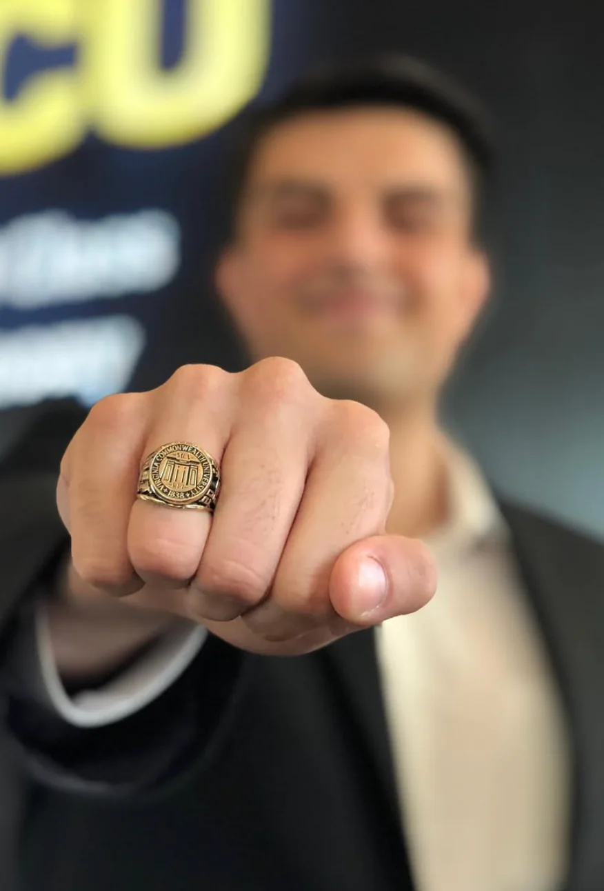

People
Clear communication, shared priorities, and responsibility for the work.
Technology · Operations · Project Leadership
I’m Jad Elahmad. My experience spans IT infrastructure, cybersecurity, business systems, and project delivery. I work across technical and business teams to turn complex initiatives into practical outcomes.
 01 / Introduction
01 / IntroductionAbout Me
I've always been curious about how things work, why they're done a certain way, and whether there's a better approach. I enjoy challenging the status quo, exploring new ideas, working with data, and solving problems that don't always have straightforward answers.
My approach to problem-solving brings together technology, cybersecurity, risk, people, and business priorities. I believe the best solutions go beyond what is technically possible. They should also be secure, practical, sustainable, and aligned with what an organization is trying to accomplish. I enjoy asking questions, understanding the bigger picture, and finding opportunities others might overlook.
Throughout my career, I've built and led teams, delivered technology initiatives, and worked across IT infrastructure, cybersecurity, business systems, and operations. I've also been involved in technology procurement, evaluating solutions, managing vendor relationships, and making decisions that balance capabilities, costs, and risks.
Above all, I value communication and building relationships. Technology can solve a lot of problems, but bringing people together, earning trust, and challenging ideas constructively are often what make the difference between a good solution and a successful outcome.
More About My Background On LinkedInClear communication, shared priorities, and responsibility for the work.
Practical plans, useful governance, and workflows teams can follow.
Technical understanding that connects systems, security, and business needs.
Selected Work & Impact
Major initiatives spanning cloud transformation, service operations, software product management, and enterprise risk.
Led a major infrastructure transformation, migrating workloads from an on-premises data center to Microsoft Azure and AWS, and shutting down the physical data center.
Azure · AWS · Cloud Migration · Data Center ExitEstablished IT service management and configuration management capabilities, building service workflows, processes, and operational visibility from the ground up.
ITSM · CMDB · Process DesignManaged a supply chain and logistics software product, applying Agile principles to prioritize work, collaborate with stakeholders, and guide product delivery.
Product Management · Agile · LogisticsBuilt an enterprise risk management program to provide a structured approach to identifying, assessing, tracking, and communicating organizational risks.
Enterprise Risk · Governance · Risk Management PASS Data Community Summit
PASS Data Community SummitIdeas & Experience
I’ve spoken at PASS Data Community Summit in 2021, 2022, and 2024—an internationally recognized conference with roots as the world’s largest Microsoft data platform gathering. The event has brought together data professionals and industry leaders, with support from companies including Microsoft, AMD, AWS, Intel, and Google Cloud. My speaking experience also includes local technology events and VCU’s Annual Ring Ceremony, where I was selected by VCU Alumni as the first student keynote speaker.
Discuss A Speaking OpportunityConnect with me about your event, audience, or idea.

Virginia Commonwealth University
Selected by VCU’s Alumni Department as the first student keynote speaker at the university’s Annual Ring Ceremony.
Life Outside Work
Finding the next challenge, on the road and on the trail.
Outside of work, I’m drawn to challenges that push my limits. From training for my fourth marathon to completing a 100+ mile cycling event in under six hours and tackling demanding hikes across the U.S. with my wife, I enjoy setting ambitious goals and putting in the work to reach them.
The preparation is part of what makes each challenge worthwhile.


Training for a marathon, thinking about riding the Virginia Capital Trail end-to-end, or looking for your next challenge? I’m always happy to connect.
From The Publications I Follow
Reporting on cybersecurity, privacy, and AI risk from independent publications. These articles are written by their publishers.
Investigations into cybercrime, fraud, and the people behind security incidents.
Visit KrebsOnSecurityCoverage of threats, vulnerabilities, and developments across cybersecurity.
Visit The Hacker NewsNews on security incidents, ransomware, software flaws, and technology.
Visit BleepingComputerContact
I’m always interested in connecting with people working in technology, sharing ideas, and learning from different experiences.
Connect on LinkedIn